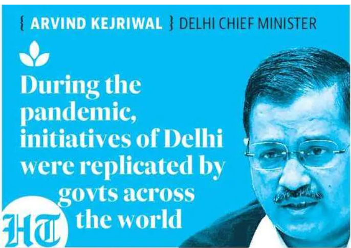

NEW DELHI, METRO
Saturday, January 02, 2021
HAPPY VACCINE YEAR!!
The crowd seemed to grow
New Delhi : India could have access to at least 40 million doses of the Oxford-AstraZeneca vaccine ready to ship from Serum Institute of India (SII) facilities in Pune, potentially helping the country catch up with other nations that have begun vaccinating their citizens.
The vaccine is at present the only candidate that will be readily available in mass volumes for the country, but its stockpiles may be among the largest, SII executives have said in recent days. This, coupled with the vaccine’s compatibility with the Indian cold chain network are factors that could help a quick roll-out. P8
New Delhi : As India gears up to launch world’s largest immunisation drive, the government is conducting a dry run on Saturday to assess its ability and readiness to administer shots to hundreds of millions of people, including many in remote corners of the country. The Centre has already successfully conducted a two-day pilot Covid-19 vaccination drive in eight districts in four states on December 28-29, but Saturday’s dry run is more ambitious in scope, covering all state capitals, with some states also testing the process’ efficiency in districts located in difficult terrain or which are poorly connected. In the national Capital, the drive will be conducted at three locations – the Daryaganj primary health centre, the government-run Guru Teg Bahadur hospital, and the private Venkateshwara hospital. Twenty-five beneficiaries – all health care workers – will be present at each site and the vaccination team will demonstrate how they will be registered, how vaccines will be given, and how they will be monitored for adverse events, if any. Union health minister Dr Harsh Vardhan said, “The objective of this dry run is to prepare everyone for the huge immunisation drive.” A senior health ministry official said, “The dry run is to look at any gaps that may be seen on ground while executing the plan.” P8
New Delhi : The government will allow flights to operate between the UK and India from January 8 but with restrictions that include limiting operations to 15 weekly flights each per country till January 23, civil aviation minister Hardeep Puri announced on Friday.
This means the Centre has fixed a cap of 30 weekly flights in all between the countries. “...flights between India and UK will resume from 8 Jan 2021. Operations till 23 Jan will be restricted to 15 flights per week each for carriers of the two countries to and from Delhi, Mumbai, Bengaluru and Hyderabad only...” Puri tweeted. P8
HT Correspondent htreporters@hindustantimes.com
New Delhi : New Delhi Delhi chief minister Arvind Kejriwal on Friday appreciated the role of health care workers and front line workers in the ongoing fight against Covid-19 ,in his New Year video message posted on social media, even as he urged residents of the city to follow all necessary precautions until vaccines are available.
“This year has been a difficult time not only for India but for the entire world. The whole world had to fight Covid-19 – the biggest pandemic faced by humankind. I take this chance to salute and honour our Corona-warriors, doctors, nurses, medical staff, policemen, sanitation workers, and all socio-religious institutions. You continued to serve the public even in such a difficult time,” said Kejriwal. Kejriwal further said, “During these testing times, our strong health care system has set countless examples before the world. Delhi showed that we are on par with other developed countries of the world. During this pandemic, several initiatives of Delhi were replicated by many countries and governments across the world,” he added. In Delhi, as on December 31, 625,369 people had been infected by the virus, since the first case was reported on March 2. Even though 609,322 of them have recovered, 10,536 succumbed to the virus, said government records.